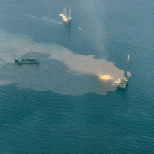
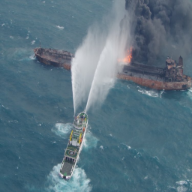
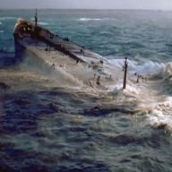
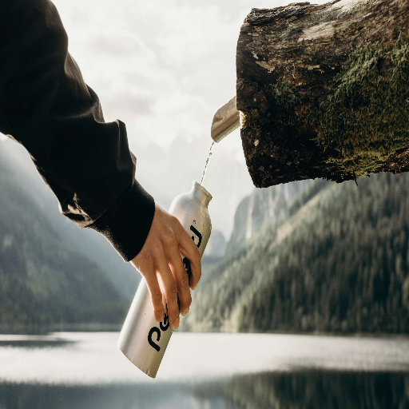
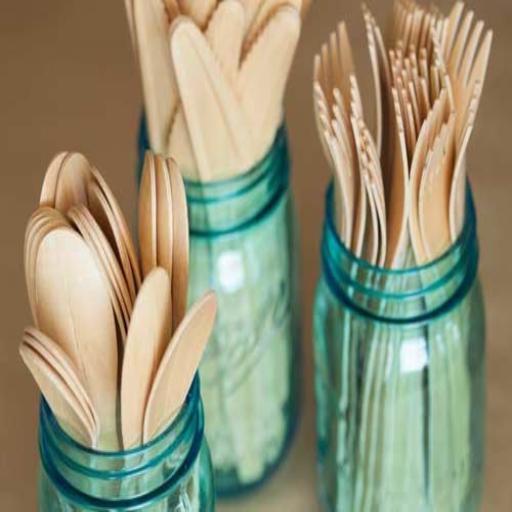
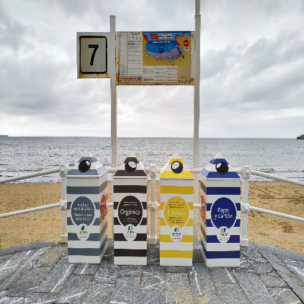
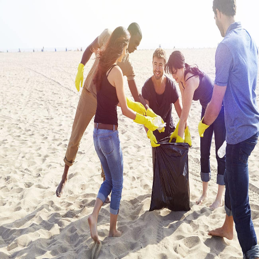
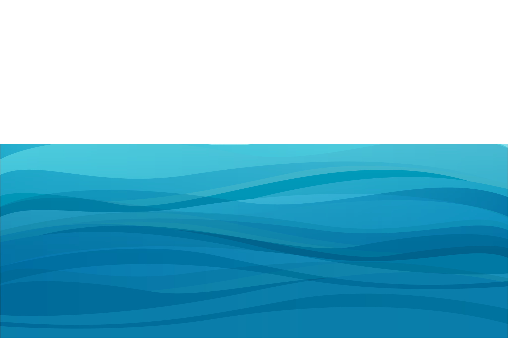

Our mission is to inform, inspire and incite on the issue of Environment Pollution. To lead political, cultural and social change for healthy seas and coasts that support abundant marine wildlife, sustainable livelihoods and enjoyment for
all.
This is what people did to our oceans...

Ixtoc
Ixtoc I was an exploratory oil well being drilled by the semi-submersible drilling rig Sedco 135 in the Bay of Campeche of the Gulf of Mexico. On 3 June 1979, the well suffered a blowout resulting in one of the
largest oil spills in history.

Exxon Valdes
The Exxon Valdez oil spill occurred in Prince William Sound, Alaska March 24, 1989, and spilled 10.8 million US gallons of crude oil over the next few days. It is considered to be one of the worst human-caused
environmental disasters.

Amoco Cadiz
Amoco Cadiz ran aground on 16 March 1978. He contained 1,604,500 barrels (219,797 tons) of light crude oil. Severe weather resulted in the complete breakup of the ship resulting in her entire cargo of crude oil and
4,000 tons of fuel oil being spilled into the sea.
This is what you can do to our oceans...

1. Use a reusable bootle
Plastic bottles are present in very (very) large quantities in our oceans, they are ingested by marine mammals or accumulate in nature and on our beaches. Different kinds of plastic can degrade at different times, but the average time for
a plastic bottle to completely degrade is at least 450 years. It can even take some bottles 1000 years to biodegrade.
Reusing plastic bottles can significantly reduce Ocean pollution, greenhouse gas emissions, and energy usage.
Plastic forks, knives and spoons may be convenient, but they’re wreaking havoc on our oceans. In fact, six million tons of non-durable plastics are discarded every year. “Non-durable” means that the plastic has a useful life of less than
three years. Other examples of non-durable plastics include plastic packaging, trash bags, cups, and more.


3. Recycle properly
Recycling is the process of converting waste materials into new materials and objects. It is an alternative to "conventional" waste disposal that can save material and help lower greenhouse gas emissions. Recycling can prevent the waste
of potentially useful materials and reduce the consumption of fresh raw materials, thereby reducing: energy usage, air pollution, and water pollution.
4. Picking up trash on the beach
Naturally, we feel a little protective of our beaches. We’re shocked to see that some people don’t care as much about our beaches as we do. When we spot trash and debris littering our beloved beaches, it’s upsetting—not only because it
damages the beauty of the beach, but also because it hurts the fragile ecosystems that call the beach home. Each individual can better the ocean’s ecosystem by playing their part in keeping the beaches clean.


Working together, we can change the current course and chart a sustainable future